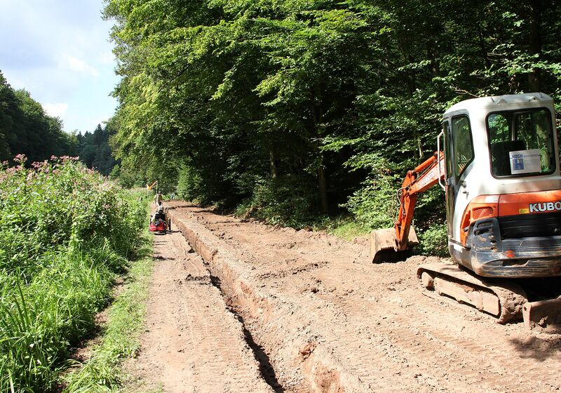
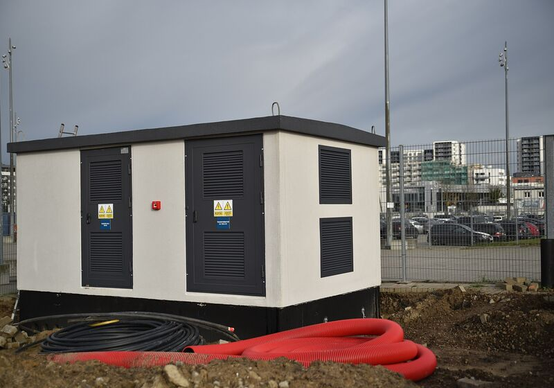

Kis- és középfeszültségű hálózatok építése
Áram, fény, forgalom. Hálózatot építünk.
Villamosenergia-elosztó hálózatokat és hálózati csatlakozásokat tervezünk, legyenek ezek áramszolgáltatói vagy magánhálózatok (1, 10 és 20 kV).
Szolgáltatásaink
Villamos közműhálózatok, közvilágítási hálózatok, forgalomtechnikai alépítmények és forgalmi jelzők építése.
Fő tevékenységünk az elektromos közművek építése, a transzformátorállomásoktól a kábel- és légvezetéki hálózatokon át a közvilágításig és a forgalomtechnikáig.
-
Transzformátorállomások
10/0,4 és 20/0,4 kV-os transzformátorállomások telepítése és időszakos karbantartása.
-
Közvilágítási hálózatok
Közvilágítási hálózatok létesítése.
-
Kábel- és légvezetéki hálózatok
1, 10 és 20 kV-os kábel- és légvezetéki hálózatok létesítése, kiváltása és bontása.
-
Forgalomtechnikai hálózatok
Forgalomtechnikai jelzők és alépítmények építése.
Miért a KOVILL?
-
2003 óta
Több mint 20 év iparági tapasztalat.
-
Hálózati infrastruktúra
Az elosztóhálózatoktól a földkábelezésen át a hálózati csatlakozásokig.
-
Teljes körű megvalósítás
Tervezés és kivitelezés egy kézben.
-
Biztonság és megbízhatóság
Az üzembiztonságra épülő mérnöki megoldások.
Kinek ajánljuk
Hálózatépítés közmű-, vállalati és intézményi megrendelőknek.
Szolgáltatásaink olyan megrendelőknek szólnak, akiknek beruházásához villamosenergia-hálózat kiépítése, bővítése vagy csatlakoztatása szükséges.
- Áramszolgáltatók és villamosenergia-hálózati engedélyesek
- Ipari és kereskedelmi ingatlanok beruházói
- Építőipari fővállalkozók
- Ingatlanfejlesztők
- Önkormányzatok és más intézményi megrendelők
A gyakorlatban
Ha egy új ipari létesítményhez villamos hálózati csatlakozásra, vagy egy terület villamosenergia-ellátásának kiépítésére van szükség, részt veszünk a kapcsolódó hálózatépítési és kivitelezési munkákban.
Nem lakossági villanyszerelés
Munkáink közmű- és hálózati léptékűek, így eltérnek a lakossági villanyszereléstől, például egy lakás belső hálózatának felújításától vagy a konnektorok cseréjétől.
Kiemelt projektek
Bizonyított szakértelem. Valódi eredmények.
Jellemző munkatípusok a villamos közműépítés területéről, válogatott referenciáinkkal (a teljesség igénye nélkül).
-

Elosztóhálózatok
Villamosenergia-elosztó hálózatok és infrastruktúrájuk kivitelezése.
- 2012 Kossuth Lajos tér átépítése: ideiglenes transzformátor telepítése a Parlament részére
- 2013 Váci út 117.: közvilágítási hálózat építése
- 2019 Budapest III. ker., Heltai Jenő tér: közvilágítási hálózat építése
- 2020 Hungexpo: 10 kV-os kábelek áthelyezése, kiváltása
- 2021–2022 Zugló városközpont: ideiglenes transzformátorállomások telepítése
- 2023–2024 Hungaroring: 10 kV-os magánhálózat és BHTR állomások létesítése
- 2024 Marina Part: közvilágítási hálózat építése
-

Földkábelezés és hálózatbővítés
Földkábelek és hálózati vezetékek fektetése, meglévő hálózatok bővítése.
- 2011 Budapest V. ker., Március 15. tér: 1 és 10 kV-os kábelhálózat cseréje, kiváltása az önkormányzat megbízásából
- 2014–2015 Budapesti fonódó villamoshálózat (Bem rakpart, Zsigmond tér, Bécsi út): 1 és 10 kV-os hálózatok és a közvilágítás átépítése, forgalomtechnikai hálózatok építése
- 2025 Budapest XI. ker., Budaörsi út – Rupphegyi út csomópont átépítése: 1 és 10 kV-os hálózat kiváltása, forgalomtechnikai hálózat és közvilágítás építése
-

Létesítmények hálózati csatlakozása
Új létesítmények villamosenergia-hálózatra csatlakozásának kivitelezése.
- 2014–2017 Nagytarcsa, Szilas ipari park: közvilágítási hálózat létesítése és átadása
- 2018 Andrássy út 25., Balettintézet: 10/0,4 kV-os betápláló hálózat és transzformátorállomások létesítése
- 2020 Budapest V. ker., Szervita tér 5.: 10/0,4 kV-os kettős betáplálás és transzformátorállomások létesítése, átadása az áramszolgáltatónak
- 2021 Budapest XII. ker., Városmajor u. 12.: 10/0,4 kV-os transzformátorállomások létesítése

Munkafolyamatunk
A tervezéstől az üzemeltetésig.
Strukturált megközelítés az első helyszíni felméréstől a hosszú távú üzemeltetési támogatásig.
-
1. lépés: Konzultáció és helyszíni felmérés
Megismerjük a projekt követelményeit, az üzemeltetési korlátokat és a helyszíni adottságokat.
-
2. lépés: Tervezés és mérnöki munka
Kidolgozzuk a műszaki megoldást, a mérnöki dokumentációt és a megvalósítási tervet.
-
3. lépés: Kivitelezés és üzembe helyezés
Koordináljuk a kivitelezést, és ellenőrizzük, hogy az elkészült rendszer megfelel-e az egyeztetett követelményeknek.
-
4. lépés: Átadás és támogatás
Átadjuk az elkészült hálózatot a dokumentációval együtt, és műszaki támogatással segítjük az üzemeltetést.

Kapcsolat
Építsünk együtt erősebb hálózatot.
- Iroda
- 2142 Nagytarcsa, Szilas u. 16.